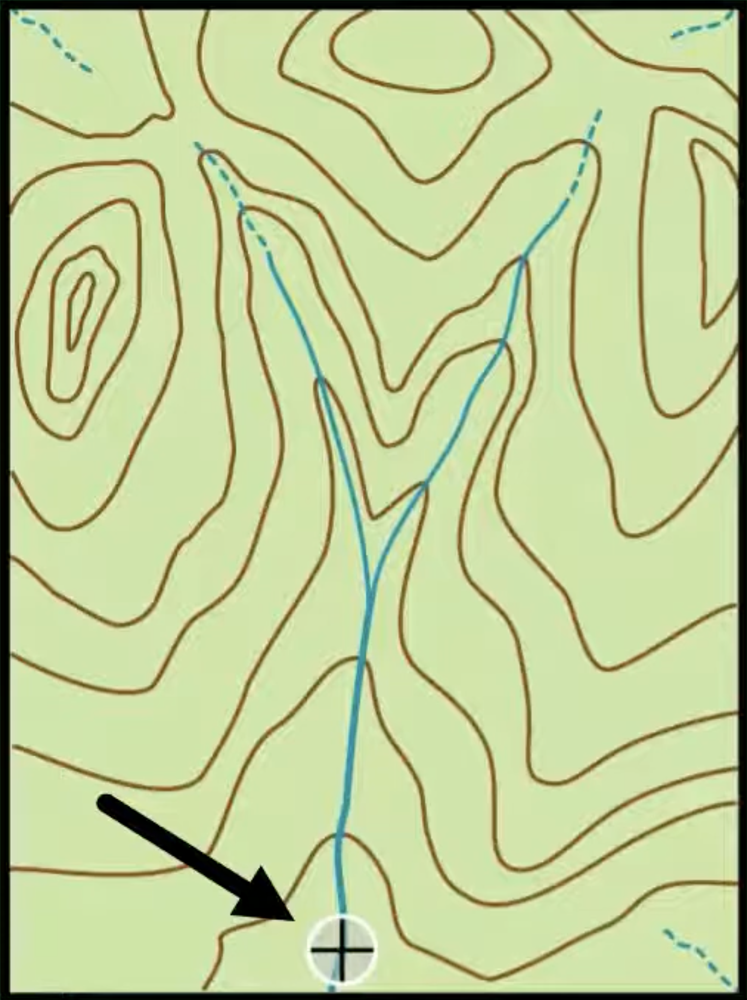

- / -
Tutorials
Water Cycle
Define the hydrological cycle and explain how it operates at both the global and catchment scales. In your answer, describe three key processes and how they interact across these scales.
Consider a large basin in a semi-arid climate. Using the water balance equation
discuss how each term is likely to behave in this setting. Explain what challenges this poses for hydrologists in measuring or estimating water availability.
Let’s go back to a quote from the lecture:
“The total quantity of fresh water on Earth could satisfy all human needs if it were evenly distributed and accessible.” — Stumm (1986)
Critically evaluate this statement using information from the lecture and Chapter 1. Include examples of spatial inequality in water resources and discuss how hydrology as a science and applied field contributes to addressing such challenges.
Refer to the topographic map provided below. The contour lines represent elevation. A stream is visible in the valley. Your task is to manually delineate the watershed boundary for a given outlet point along the stream using standard hydrological reasoning.
